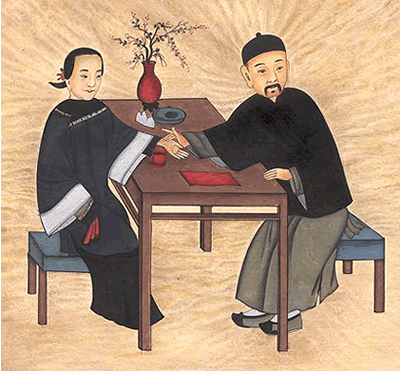

Choosing an Acupuncturist
There are marked differences in approach and applied theory between Western medicine and Classical Acupuncture. Therefore, beyond basic anatomy and first aid, a thorough knowledge of Western medicine is not necessarily helpful in learning Classical Chinese medicine. While undergraduate college pre-medical sciences are required by both Western medical schools and Acupuncture Schools, the post-graduate training is very different. Most accredited or approved Acupuncture Colleges are at least 3-year, full-time programs which involve intensive study of didactic and practical Chinese medical theory, acupuncture anatomy and physiology in relation to precise point location, physical diagnostic evaluation, and supervised clinical practice. After successfully completing some 2,500 hours of training and obtaining a graduate degree in acupuncture, most states require practitioners in order to be eligible for licensing, to pass the competency examination administered by the National Commission for the Certification of Acupuncture and Oriental Medicine. Given the vast amount of material to be mastered, as well as the challenge involved in learning an art which relies so heavily on one's personal development of touch sensitivity, observational skills and basic ability to develop rapport with one's patients, successful licensure is considered entry level in the field, and most licensed practitioners continue their training throughout their careers.
The quality and length of training of the practitioner is important in terms of receiving the benefit of Classical Acupuncture. Before choosing an acupuncturist, it would be advisable to ask where they were trained, the length of the program and/or whether they have passed the national competency examination (NCCAOM). Licensure in most states will ensure at least entry level training, however Acupuncture licensure has no jurisdiction, in many states, over other medical professions which may choose to include acupuncture under their umbrella of practice.